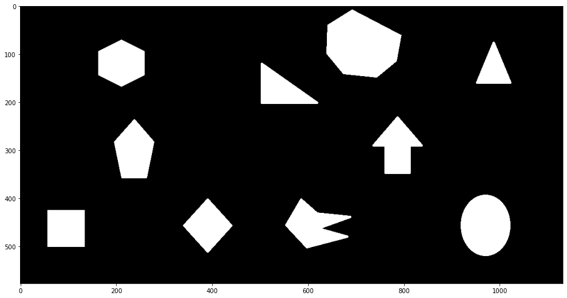
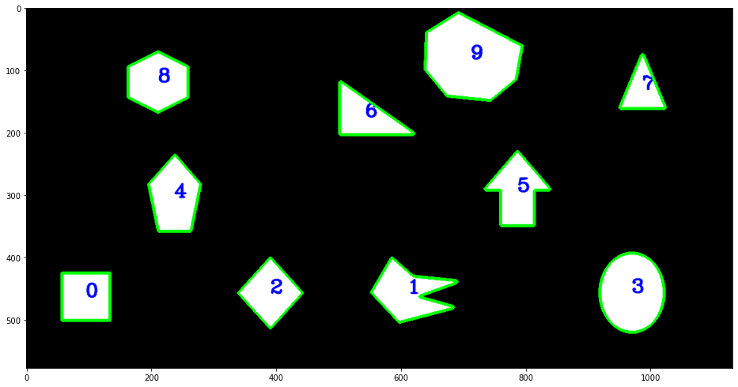
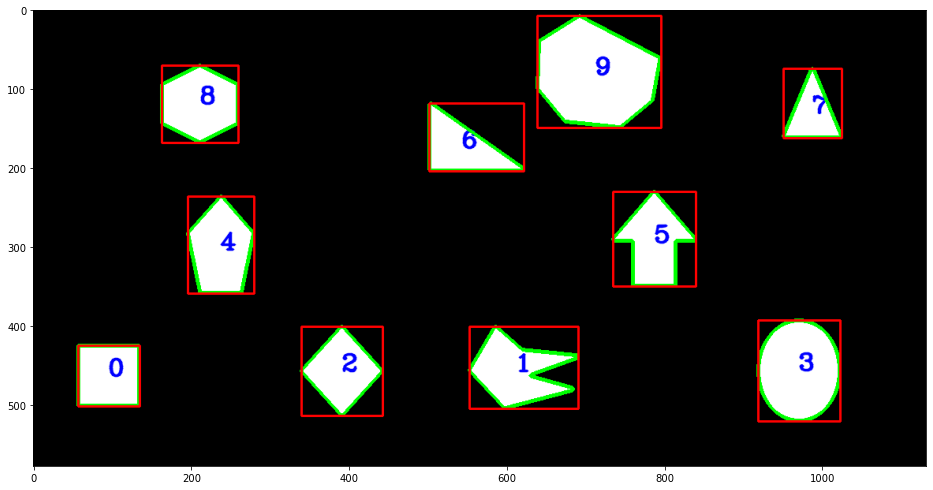
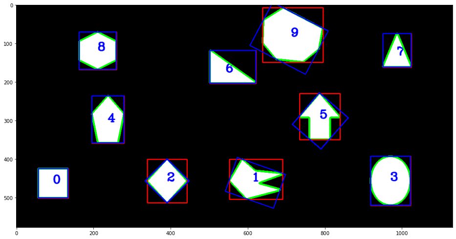

!pip install opencv-python==4.5.5.64
!pip install watermarkThe official tutorial on contours in OpenCV can be found here. We’ll summarize some important methods discussed in this notebook, using the image below as an example.
import cv2 as cv
import numpy as np
import matplotlib.pyplot as pltdef display_image(img):
fig, ax = plt.subplots(figsize=(16,16))
ax.imshow(cv.cvtColor(img, cv.COLOR_BGR2RGB))
plt.show()
img = cv.imread("FindingContours.png")
display_image(img)
Normally before finding contours in an image the image has to be binarized using a threshold algorithm, or canny edge detection. But in this case the image is already binarized, as the following calculation shows.
print("Shape: ", img.shape)
# The image pixels only take 2 values, hence it's binarized.
print("Values: ", np.unique(img))Shape: (578, 1132, 3)
Values: [ 0 255]We’ll first convert the image to gray scale.
gray = cv.cvtColor(img, cv.COLOR_BGR2GRAY)
gray.shape(578, 1132)Now find contours using the cv.CHAIN_APPROX_NONE method. This requires more memory but the following methods tend to be more robust (this includes convexity checking and orientation finding methods).
contours, _ = cv.findContours(gray, cv.RETR_LIST, cv.CHAIN_APPROX_NONE)
len(contours)10Label the contours so we can refer to them later. The first method we’ll use below is contourArea to filter out noise. We’ll also use moments to calculate the contours centroid.
mimg = img.copy()
# Go through all non-trivial contours and label them.
for i, contour in enumerate(contours):
area = cv.contourArea(contour)
if area < 1e2 or area > 1e5:
continue
moments = cv.moments(contour)
cx, cy = int(moments["m10"]/moments["m00"]), int(moments["m01"]/moments["m00"])
mimg = cv.putText(mimg, str(i), (cx,cy), cv.FONT_HERSHEY_COMPLEX,
1, (255,0,0), 2, cv.LINE_AA)
# Replace -1 with the contour index to draw a specific contour.
cv.drawContours(mimg, contours, -1, (0,255,0), 3)
display_image(mimg)
Now we’ll calculate several contour properties, including convexity, area, perimeter and angle. An important detail to keep in mind is that image coordinates have clockwise orientation (in contrast with Cartesian coordinates which are counter-clockwise). So for example, an angle of 10 degrees, lies in the quadrant with positive \(x\) and \(y\) values. See this tutorial for further details.

for i, contour in enumerate(contours):
area = cv.contourArea(contour)
if area < 1e2 or area > 1e5:
continue
# isContourConvex doesn't work so well and depends on the chain approx
# method.
isconvex = cv.isContourConvex(contour)
perimeter = cv.arcLength(contour, True)
# We'll use the angle returned by fitEllipse
_, _, angle = cv.fitEllipse(contour)
print(f"{i} IsConvex: {isconvex}, Area: {area:.2f}, Perimeter: {perimeter:.2f}, Angle: {angle:.2f}")0 IsConvex: False, Area: 5852.00, Perimeter: 306.00, Angle: 90.00
1 IsConvex: False, Area: 7104.50, Perimeter: 485.49, Angle: 19.44
2 IsConvex: False, Area: 5920.00, Perimeter: 310.84, Angle: 45.00
3 IsConvex: False, Area: 10290.00, Perimeter: 382.68, Angle: 90.00
4 IsConvex: False, Area: 7119.50, Perimeter: 343.81, Angle: 90.00
5 IsConvex: False, Area: 6518.00, Perimeter: 382.74, Angle: 40.76
6 IsConvex: False, Area: 5357.50, Perimeter: 358.21, Angle: 0.00
7 IsConvex: False, Area: 3375.00, Perimeter: 276.65, Angle: 90.00
8 IsConvex: False, Area: 7056.00, Perimeter: 329.76, Angle: 90.00
9 IsConvex: False, Area: 15776.50, Perimeter: 492.66, Angle: 27.55Below we’ll use boundingRect to draw bounding boxes around the contours.
for contour in contours:
x,y,w,h = cv.boundingRect(contour)
cv.rectangle(mimg, (x,y), (x+w, y+h), (0,0,255),2)
display_image(mimg)
Now we’ll consider another method called minAreaRect, which calculates the rectangle enclosing the contour with minimal area.
for contour in contours:
area = cv.contourArea(contour)
if area < 1e2 or area > 1e5:
continue
# rect is the following tuple: ( center (x,y), (width, height), angle of rotation )
rect = cv.minAreaRect(contour)
# Need to get verticies to draw the rectangle.
box = cv.boxPoints(rect)
box = np.int0(box)
cv.drawContours(mimg, [box], 0, (255,0,0), 2)
display_image(mimg)
At this point we’ve seen two methods that give an orientation of a contour. The first was fitEllipse, and then minAreaRect. Finally we’ll use PCACompute21 (see Introduction to PCA) for a third method for obtaining the contour orientation and compare it with the former methods.
for i, contour in enumerate(contours):
area = cv.contourArea(contour)
if area < 1e2 or area > 1e5:
continue
print(f"Contour {i}")
_,_, angle_minor = cv.fitEllipse(contour)
print(f"fitEllipse angle: {angle_minor:.2f}")
_, _, angle_rect = cv.minAreaRect(contour)
print(f"minAreaRect angle: {angle_rect:.2f}")
mean = np.empty((0))
mean, eigenvectors, eigenvalues = cv.PCACompute2(contour.squeeze().astype(np.float64), mean)
# Compare with angles from PCA.
print("PCA angles", [ round(num, 2) for num in cv.phase(eigenvectors[:,0], eigenvectors[:,1], angleInDegrees=True).reshape(-1)] )
print("")Contour 0
fitEllipse angle: 90.00
minAreaRect angle: 90.00
PCA angles [0.0, 90.0]
Contour 1
fitEllipse angle: 98.17
minAreaRect angle: 19.44
PCA angles [10.81, 100.81]
Contour 2
fitEllipse angle: 0.04
minAreaRect angle: 45.00
PCA angles [89.99, 359.99]
Contour 3
fitEllipse angle: 0.09
minAreaRect angle: 90.00
PCA angles [90.05, 0.05]
Contour 4
fitEllipse angle: 0.15
minAreaRect angle: 90.00
PCA angles [90.38, 0.38]
Contour 5
fitEllipse angle: 0.03
minAreaRect angle: 40.76
PCA angles [90.02, 0.02]
Contour 6
fitEllipse angle: 116.06
minAreaRect angle: 0.00
PCA angles [27.48, 117.48]
Contour 7
fitEllipse angle: 0.01
minAreaRect angle: 90.00
PCA angles [90.05, 0.05]
Contour 8
fitEllipse angle: 90.00
minAreaRect angle: 90.00
PCA angles [0.0, 90.0]
Contour 9
fitEllipse angle: 109.28
minAreaRect angle: 27.55
PCA angles [17.31, 107.31]
Note that the PCA angles are the angles made by the semi-major and semi-minor axis of the PCA ellipse about the x-axis. The above calculations suggest that fitEllipse returns the angle made by the semi-minor axis of the PCA ellipse (also see here). Due to this simple geometric interpretation, we use the angle returned by fitEllipse to represent the orientation of the contour.
%load_ext watermark
%watermark --iversions -vPython implementation: CPython
Python version : 3.9.7
IPython version : 7.31.0
cv2 : 4.5.5
numpy : 1.19.5
matplotlib: 3.5.1
Footnotes
Note that the contour was converted to floats before passing it to PCACompute2. This is a consistent pattern throughout opencv-python that the appropriate data type has to be used.↩︎